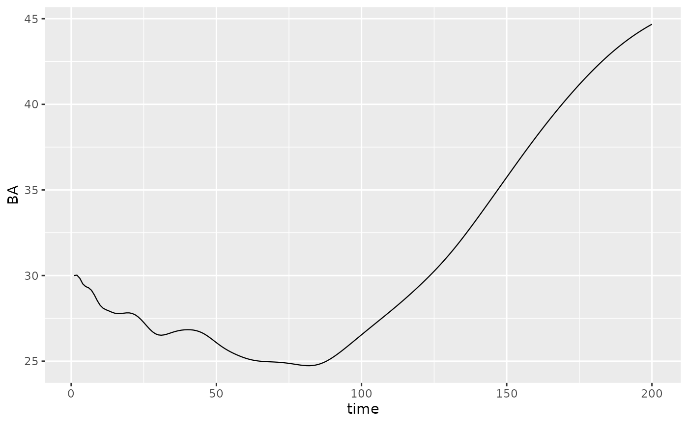
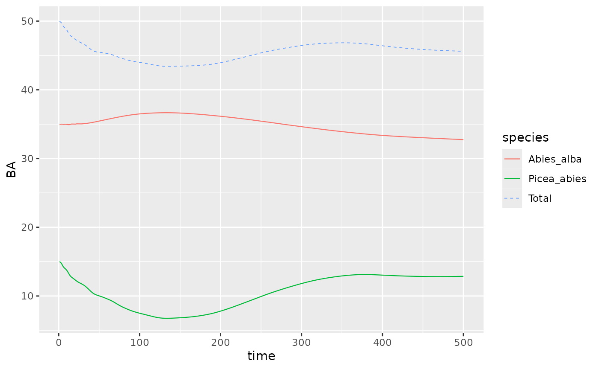

This vignette illustrates the basic functions used to run simulations
projecting the population of size-structured trees with
{matreex} package. The package can model the dynamic of
monospecific or plurispecific tree communities. Different modules allow
also to simulate harvesting and disturbances. To project forward the
dynamic of size-structured tree populations, this package relies on
integrated projection models (later named IPM).
Rapid description of the Integral Projection Model
Details on the fitting and the integration of IPM model can be found in Ellner, Childs, and Rees (2016). Briefly, an IPM predicts the size distribution, \(n(z', t+1)\), of a population at time t+1 from its size distribution at time t, \(n(z, t)\), with \(z\) the size at t and \(z'\) the size at \(t + 1\), based on the following equation (Ellner, Childs, and Rees (2016)):
\[ n(z', t+1) = \int_{L}^{U} K(z', z) n(z, t) dz \]
with \(L\) and \(U\) being, respectively, the lower and upper observed sizes for integration of the kernel \(K\).
The kernel \(K(z' ,z)\) can be split into the survival and growth kernel \(P(z' ,z)\) and the fecundity kernel \(F(z', z)\), as follows : \(K(z' ,z) = P(z' ,z) + F(z' ,z)\) .
The fecundity kernel \(F(z', z)\) gives the size distribution of newly recruited trees at time \(t+1\) as a function of the size distribution at time t. The survival and growth kernel \(P(z', z)\) is defined as \(P(z', z) = s(z) \times G(z', z)\), \(s\) being the survival function and \(G\) the growth function. The kernel \(K(z' ,z)\), thus, integrate the three key vital rates functions: growth, survival, and recruitment. The kernel \(P\) is numerically approximated with a big iteration matrix and the continuous size distribution \(n\) is approximated by a big state vector. The dimension and the width of the size class are selected to ensure a good numerical integration of the kernel \(P\). Details on the numerical integration are given below and in Kunstler et al. (2021) and Guyennon et al. (2023) . Note, that this package do not cover the statistical fitting of the vital rates functions.
Simulations input
Define a species
Before simulating forest, we need first to define tree species in R. Species regroups basic vital rates functions: growth, recruitment and survival. In this package, we provide the fitted vital rates functions used in Kunstler et al. (2021) and Guyennon et al. (2023) . These functions depend on tree size, local competition based on the sum of basal area of competitors, and two climatic variables. The climatic variables are the sum of the sum of growing degree days sgdd, the water aridity index wai (see Kunstler et al. (2021) for more details). Kunstler et al. (2021) and Guyennon et al. (2023) used a resampling procedure to estimate the vital rates functions resulting in 100 resampled estimate of the parameters of each functions, here to simplify the simulations we provide only the averaged parameters over those 100 resamples. It is however, in theory, possible to run simulations with other vital rates functions if they are provided as glm objects (please contact the authors to test new variables).
To build an IPM for a species we start from fitted function Kunstler et al. (2021) and Guyennon et al. (2023) . To do the numerical integration
of \(P\), we need to define the mesh
dimension, here \(700\), the lower
\(L\) and upper limits \(U\), here respectively 90mm and
get_maxdbh(fit_Picea_abies) * 1.1 = 1204.5mm, and range of
value of competition index BA (here from 0 to 60 \(m^2/ha\)). These are the values used in
Kunstler et al. (2021) and Guyennon et al. (2023) that were optimized to provide
good numerical integration.
Please keep in mind this computation is intensive and may take few minutes!
library(matreex)
library(dplyr)
#>
#> Attaching package: 'dplyr'
#> The following objects are masked from 'package:stats':
#>
#> filter, lag
#> The following objects are masked from 'package:base':
#>
#> intersect, setdiff, setequal, union
library(ggplot2)
# Load fitted model for a species
# fit_species # list of all species in dataset
data("fit_Picea_abies")
# Load associated climate
data("climate_species")
climate <- subset(climate_species, N == 2 & sp == "Picea_abies", select = -sp)
# N here is a climate defined in Kunstler et al 2021.
# N == 2 is the optimum climate for the species.
# see ?climate_species for more info.
climate
#> sgdd wai sgddb waib wai2 sgdd2 PC1
#> 62 1444.667 0.4519387 0.0006922012 0.6887343 0.2042486 2087062 1.671498
#> PC2 N SDM
#> 62 0.02602064 2 0.6760556
Picea_ipm <- make_IPM(
species = "Picea_abies",
climate = climate,
fit = fit_Picea_abies,
clim_lab = "optimum clim",
mesh = c(m = 700, L = 90, U = get_maxdbh(fit_Picea_abies) * 1.1),
BA = 0:60, # Default values are 0:200, smaller values speed up this vignette.
verbose = TRUE
)
#> Launching integration loop
#> GL integration occur on 32 cells
#> midbin integration occur on 25 cells
#> Loop done.
#> Time difference of 50.5 secsOnce the IPM is integrated on a BA range, we can use it to build a
species object. In R, a species is a list object that is constructed
with the species() function. In addition to the IPM kernel
\(P\), this list require few more
functions to work during simulations :
init_pop: Function to draw the initial size distribution. The default one draw distribution for a basal area (later named BA) of 1 \(m^2/ha\) with random functions (see the help of the function for more details). The package provide other functions to draw random distribution at a selected BA (def_initBA()) or a given distribution (def_init_k()).harvest_fun: Function that cut tree given the size distribution. The default function cut 0.6% per year of the trees regardless of their size. Further functions allow to harvest according to Uneven and Even rules (see Harvesting Vignette).disturb_fun: Function that return tree mortality after a disturbance. The default is no disturbance.
A species also comes with few parameters, but they are only used for harvest and disturbance modules.
For this example, we will just modify the initial size distribution to start at a basal area of 30 \(m^2/ha\).
Picea_sp <- species(IPM = Picea_ipm, init_pop = def_initBA(30))Running simulations
A simulations project forward a size-structured population from its
initial state with the matrix kernel \(P\) and the recruitment function. This
function requires the length of the simulation and the time limit to
search for an equilibrium. A simulation is run until the time limit is
reached and can continue further if an equilibrium is not reached.
Another parameter is the simulated surface SurfEch, it’s
define the surface of the studied forest. This parameter is mainly here
for historical purpose as models were fitted on \(300m^2\) plot, and output is scaled to one
hectare.
set.seed(42) # The seed is here for initial population random functions.
Picea_sim <- sim_deter_forest(
Picea_for,
tlim = 200,
equil_time = 300, equil_dist = 50, equil_diff = 1,
SurfEch = 0.03,
verbose = TRUE
)
#> Starting while loop. Maximum t = 300
#> Simulation ended after time 263
#> BA stabilized at 45.43 with diff of 0.94 at time 263
#> Time difference of 2.03 secsIn the code above, we simulate for 200 years (tlim)
years and past this time we continue the simulation till it reach an
equilibrium up to 300 years (see figure A). After tlim, the
simulation will continue until the population reach an equilibrium up to
a maximum of 300 year (equil_time) .
The criteria for reaching an equilibrium (in green) is based on
computing the range of variation of BA for a moving window of length
equil_dist since the current step (in grey). The
equilibrium is reached if the range of variation within this moving
window is less than equil_diff. The equilibrium is reached
at the first timestep for which the basal area range is lower than
equil_diff. The steps between tlim and
t_equil are not recorded. The search for the equilibrium
start at tlim over the last equil_dist steps
(see figure B). This is why equil_dist must not be higher
than tlim. If we want to register the full dynamic, we can
set tlim = equil_time (see figure C). The
equilibrium is always the last size distribution (shown in
green in figure). Note that in this case, the final distribution will be
returned in the result twice. The equil_dist and
equil_diff parameters are not important in this case.
Keep in mind that despite high tlim and
equil_time values, the equilibrium may not be reached at
the end of the simulation. There is currently no way in the algorithm to
report this to the user. The best way to detect “false equilibrium” is
when the last step takes place at t == equil_time and by
plotting the basal area along time. These cases are illustrated in
figure D and E.
Also, this equilibrium is only computed on total basal area, and the distribution can change. We welcome any suggestions you may have regarding the equilibrium definition.
The output of a simulation is a data.frame in long format (according
to tidyverse style). This is very helpful to filter the output and plot
it with ggplot2. Variables exported are the basal area
per species BAsp, n and hthe
number of alive and harvested individuals per mesh, and N
and H the total number of alive and harvested individuals
in the forest (per hectar).
Picea_sim %>%
dplyr::filter(var == "BAsp", ! equil) %>%
ggplot(aes(x = time, y = value)) +
geom_line(linewidth = .4) + ylab("BA")
If size distributions needs to be extracted, it can be easily done with dplyr functions. The equilibrium step is associated with a logical variable to extract it.
head(Picea_sim)
#> # A tibble: 6 × 7
#> species var time mesh size equil value
#> <chr> <chr> <dbl> <dbl> <dbl> <lgl> <dbl>
#> 1 Picea_abies n 1 1 0 FALSE 0
#> 2 Picea_abies n 2 1 0 FALSE 2.19
#> 3 Picea_abies n 3 1 0 FALSE 2.18
#> 4 Picea_abies n 4 1 0 FALSE 2.21
#> 5 Picea_abies n 5 1 0 FALSE 2.26
#> 6 Picea_abies n 6 1 0 FALSE 2.28
# get the maximum time
max_t <- max(Picea_sim$time)
# Filter example to extract the size distribution
Picea_sim %>%
dplyr::filter(grepl("m", var), time == max_t) %>%
dplyr::select(size, value)
#> # A tibble: 0 × 2
#> # ℹ 2 variables: size <dbl>, value <dbl>Customizing the simulations
The above simulation is one of the simplest we can produce with this package. This chapter will describe some basic customization we can add before running a simulation.
Initialisation step
By default, the initialization of the population run random process
to draw a size distribution for each species. We already show a function
(def_initBA()) that scale this distribution to a given
basal area. However, for a basal area value, multiple distribution are
possible. To control the exact distribution at start, we use
def_init_k(). This choice of starting distribution can be
used to reproduce simulations, starting from an equilibrium or a post
disturbance state.
Here is an example where we start from \(t = 150\) of the previous simulation. This will illustrate that despite the simulation said it reached equilibrium at time \(t =\) 263244, our parameters have introduced failed to identify the true equilibrium. The previous equilibrium is highlighted in blue rectangle.
# extract distribution
distrib_t150 <- Picea_sim %>%
dplyr::filter(var == "n", time == 150) %>%
dplyr::pull(value)
# NOTE : this distribution is given per ha and we need it for SurfEch = 0.03.
distrib_t150 <- distrib_t150 * 0.03
Picea_sp$init_pop <- def_init_k(distrib_t150)
Picea_sim_k <- sim_deter_forest(
forest(species = list(Picea = Picea_sp)),
tlim = 200,
equil_time = 300, equil_dist = 50,
SurfEch = 0.03,
verbose = TRUE
)
#> Starting while loop. Maximum t = 300
#> Simulation ended after time 300
#> BA stabilized at 30.32 with diff of 1.25 at time 300
#> Time difference of 2.32 secs
Picea_sim_k %>%
dplyr::filter(var == "BAsp", ! equil) %>%
# below, we keep the time reference of the previous simulation
# to simplify the understanding of the full document.
dplyr::mutate(time = time + 150) %>%
ggplot(aes(x = time, y = value)) +
geom_line(linewidth = .4) + ylab("BA") +
geom_rect(mapping = aes(xmin = prev_equil - 50, xmax = prev_equil,
ymin = max(value-1), ymax = max(value)),
alpha = 0.002, fill = "blue") +
geom_text(aes(label = "False equilibrium",
x = prev_equil - 25, y = max(value) - 3), size = 4) Recruitment delay
New trees are recruited at \(L\)
(90mm). Trees takes however several years to grow from seed to the
minimum size \(L\). To represents the
time lag for a tree to recruit up to \(L\), we can modify a species by adding a
delay for recruitment of new individuals. By default, the recruitment is
a given number of new individuals. This number is split in half and adds
to the first two class of size distribution. Adding delay expand the IPM
with n_delay age based classes to represent the year its
takes (here 5 years) to grow up to \(L\). The new recruit will age from one age
class to another until they enter the size-based IPM.
A default delay is used by build_IPM() for each species.
These values are computed from regressions.
n_delay <- 5
Picea_sp_d5 <- delay(Picea_sp, n_delay)
Picea_sp_d5$info["species"] <- "Picea_delayed" # We rename the species for easier plot.
Picea_sp_d5$init_pop <- def_initBA(30)The simulation is run in the same way as the delay is only defined at the IPM level.
set.seed(42)
Picea_sim_d5 <- sim_deter_forest(
forest(species = list(Picea = Picea_sp_d5)),
tlim = 200,
equil_time = 200, equil_dist = 50,
SurfEch = 0.03,
verbose = TRUE
)
#> Starting while loop. Maximum t = 200
#> Simulation ended after time 200
#> BA stabilized at 43.85 with diff of 10.04 at time 200
#> Time difference of 1.46 secsEquilibrium BA should be really close with or without delay (\(\Delta_{BA} < 1\)). N is expected to increase with delay since delayed mesh cell with seeds are counted in.
Multiple species
Multi-specific simulations are performed like the simulations
previously illustrated. The only difference is in the construction of
the forest object. This explain why the species argument
for forest() function require a list for input.
We need to modelise a second species. Be careful to select the same climate as the first species.
data("fit_Abies_alba")
Abies_ipm <- make_IPM(
species = "Abies_alba",
climate = climate, # this variable is defined at the top of the doc.
fit = fit_Abies_alba,
clim_lab = "optimum clim",
mesh = c(m = 700, L = 90, U = get_maxdbh(fit_Abies_alba) * 1.1),
BA = 0:60, # Default values are 0:200, smaller values speed up this vignette.
verbose = TRUE
)
#> Launching integration loop
#> GL integration occur on 24 cells
#> midbin integration occur on 25 cells
#> Loop done.
#> Time difference of 33.3 secs
Abies_sp <- species(IPM = Abies_ipm, init_pop = def_initBA(35))
# We edit back the init_fun for Picea
Picea_sp$init_pop <- def_initBA(15)
Picea_Abies_for <- forest(species = list(Picea = Picea_sp, Abies = Abies_sp))
set.seed(42)
Picea_Abies_sim <- sim_deter_forest(
Picea_Abies_for,
tlim = 500,
equil_time = 500, equil_dist = 50,
SurfEch = 0.03,
verbose = TRUE
)
#> Starting while loop. Maximum t = 500
#> time 500 | BA diff : 0.54
#> Simulation ended after time 500
#> BA stabilized at 50.15 with diff of 0.54 at time 500
#> Time difference of 5.99 secs
Picea_Abies_sim %>%
dplyr::filter(var == "BAsp", ! equil) %>%
ggplot(aes(x = time, y = value, color = species)) +
geom_line(linewidth = .4) + ylab("BA") +
stat_summary(fun = "sum", aes(col="Total"),
geom ='line', linetype = "dashed", linewidth = .3)
An important point to note for multiple species is that the equilibrium is defined at the forest level, that is the sum of species basal area.